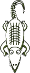

2.1.2 Monday Afternoon Exercises
Using
; A vcat is ; (make-vcat string number number) (define-struct vcat (x happiness)) we’ll put the two pieces of our virtual cat game together.
Define vcat-scene, which consumes a vcat and produces a scene.
You should to reuse your gauge-scene and cat-scene functions. To stack two scenes together, use overlay, which works like this:
(overlay (cat-scene 100) (gauge-scene 50))
Write vcat-act, which takes a vcat and produces a vcat that has moved and whose happiness has declined.
Don’t forget to write tests!
Write vcat-react, which takes a virtual cat and a key, and produces a virtual cat whose happiness is potentially changed by the key event (i.e., petted or fed).
Put your virtual cat game together:
(define (run-vcat a-vcat) (big-bang a-vcat (on-draw vcat-scene) (on-tick vcat-act) (on-key vcat-react))) (run-vcat (make-vcat 0 50)) ; in interactions
Extend your vcat data definition to include a direction, which you can represent as 1 or -1.
Adjust all your functions to handle direction. The vcat-act function should move the cat in the current direction, and it should turn the cat around when its center reaches either end of the scene.
Now it’s time for a chameleon game.
; A vcham is ; (make-vcham string number) (define-struct vcham (color happiness)) Here’s a chameleon picture. Important: You can’t cut and paste this image. Instead, save it to a file and then use DrScheme’s “Insert Image” menu item to insert it into your program. Using “Insert Image” preserves the transparency of pixels that lets us color the chameleon:

The inside of the chameleon is actually transparent, while the area outside is solid white. If cham is the name of the chameleon image, we can overlay it on a red rectangle to get a red chameleon:
(overlay (rectangle (image-width cham) (image-height cham) "solid" "red") cham) Write a function vcham-scene that consumes a vcham and produces a scene with the chameleon in its current color and with a happiness gauge.
Don’t forget to reuse any relevant functions that you have written already.
(This function is relatively difficult to test, since it’s difficult to draw the expected answer without using the same expression as in the function. We’ll go easy on you, just this once.)
Write a function vcham-act that consumes a vcham and produces a vcham whose happiness declines by 0.1.
Write a function vcham-react that consumes a vcham and a key. It produces a vcham whose happiness improves by 2 for feeding (i.e., a down-key event) an whose color changes to red for an "r" key, blue for a "b" key, and green for a "g" key.
Put your virtual chameleon game together with big-bang in a run-vcham function.
Generalize to vanimals:
; A vanimal is either ; * a vcat ; * a vcham Write vanimal-scene which consumes a vanimal and produces a scene, where virtual cats and chameleons are each placed as before.
Write vanimal-act which consumes a vanimal and produces a vanimal, where virtual cats and chameleons each act as before.
Write vanimal-react which consumes a vanimal and a key and produces a vanimal, where virtual cats and chameleons each react as before.
Now you can define a play-game that takes any vanimal and plays the game for that animal:
; run-vanimal : vanimal -> vanimal (define (run-vanimal a-vanimal) (big-bang a-vanimal (on-draw vanimal-scene) (on-tick vanimal-act) (on-key vanimal-react)))
Optional: Create a virtual pet game that supports two animals. You’ll need a data definition for a zoo containing two animals, and so on.
At first, have each key event go to both animals (i.e., the down arrow feeds both animals at the same time). Then extend your data definition of a two-animal zoo to include a focus, and have the left- and right-arrow keys set the focus animal for keyword events.